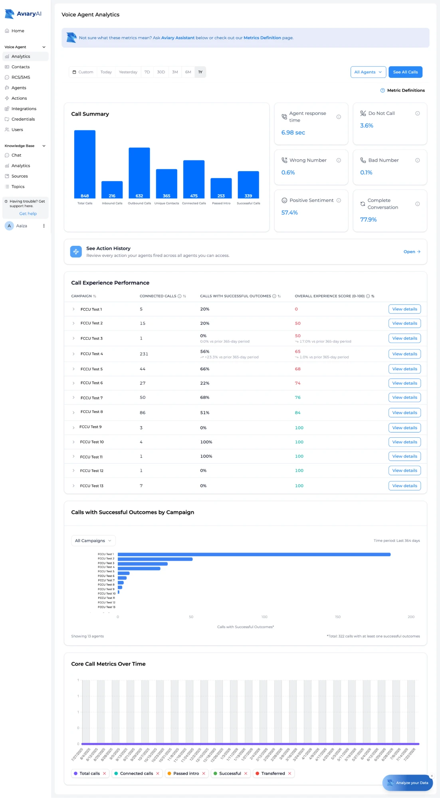

Every dashboard counted that as a success. I designed the monitoring layer that made call-experience health visible, and built the scoring model underneath it. Validated against human reviewers, it reached about 90 to 95% agreement.
Outcome measures whether the agent hit its goal. Experience measures whether the call was any good. They don't move together. The trap is the call that reaches its goal through a bad interaction.
Blend the two into one score and that call reads as a clean win. A call that hallucinated or talked over the member the whole way, but still booked the appointment, looks identical to a genuinely good one. The call most likely to damage the brand becomes the one you can't see. Try it:
I kept outcome and experience as separate signals, so a good outcome could never hide a bad experience. A combined metric would have concealed exactly the calls a quality-sensitive client is most afraid of: the ones that succeed on paper while leaving a member with a bad impression of the brand.
I worked with five credit unions, and instead of interviewing people about their process, I had them open the live dashboard and do their real monitoring job while I watched. That's where the Excel workaround showed up, something nobody had mentioned when I'd asked about their process directly.
Users downloaded spreadsheets and worked the central "which calls are bad?" question in Excel, because the dashboard couldn't answer it. When people quietly route around your product to do the main task by hand, the product has already failed at its main job. I only saw it because I watched the whole path.
I built the script around the decisions these operators actually make: how they judge a call, what makes them escalate, when they diagnose something themselves versus hand it back to us. Watching them rate calls in these sessions also gave me the human benchmark I later validated the scoring model against.
The operator's three real questions, in order, became three levels of the interface. "Should I worry?" leads to "how bad, and is it getting worse?" leads to "which calls, and why?" Walk it the way a user would:

I collapsed a granular 1 to 5 score into three buckets: ignore, review, or stop and look now. That's the actual decision operators make on every call. The rule that matters most is subtler: two moderate issues compound into a critical one. Build a call and watch where it lands:
Two moderate issues promote a call to Critical, even when nothing on its own is severe. This complicated the interface, since one call could now belong to several buckets. I kept it anyway, because it was the rule that made the system's grades line up with what human reviewers said. Drop it and the score stops matching human judgment, and matching human judgment was the whole point.
A quality-sensitive client won't act on a grade they can't understand or override, so every decision in this system exists to answer one question: why should they trust it? Three principles shaped how it earns that trust. Tap a card for why I applied it this way and not the obvious alternative.
To validate the model, I exported its grades, had the client grade the same calls independently, and compared the two. The first pass agreed 80% of the time. Rather than accept that, I went through the 20% where we disagreed to see what the system was missing.
The disagreements clustered: calls that flowed smoothly but were wrong at the content level. They sounded coherent but were subtly off-track, and the flow-based score couldn't see them.
The original illogical score caught calls that broke down in how they flowed: loops, dead silence, word salad. It missed calls that sounded smooth but were wrong in what they actually said. I designed a new metric to grade whether the conversation made sense at the content level, tested it, and agreement rose to about 90 to 95% across both client and internal review.
The hardest part of this project was the measurement design underneath the interface, and holding V1 to a narrow scope while a steady stream of reasonable requests (benchmarks, remediation, a learning loop) pushed to expand it. Deciding what to leave out mattered as much as deciding what to build.